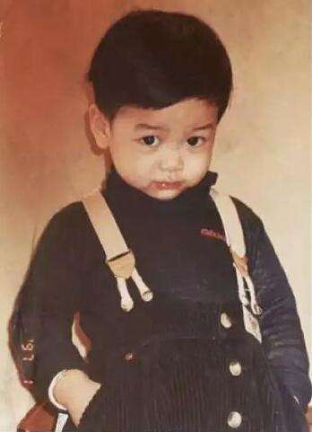
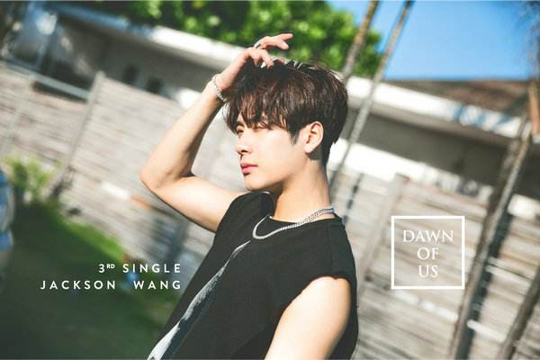
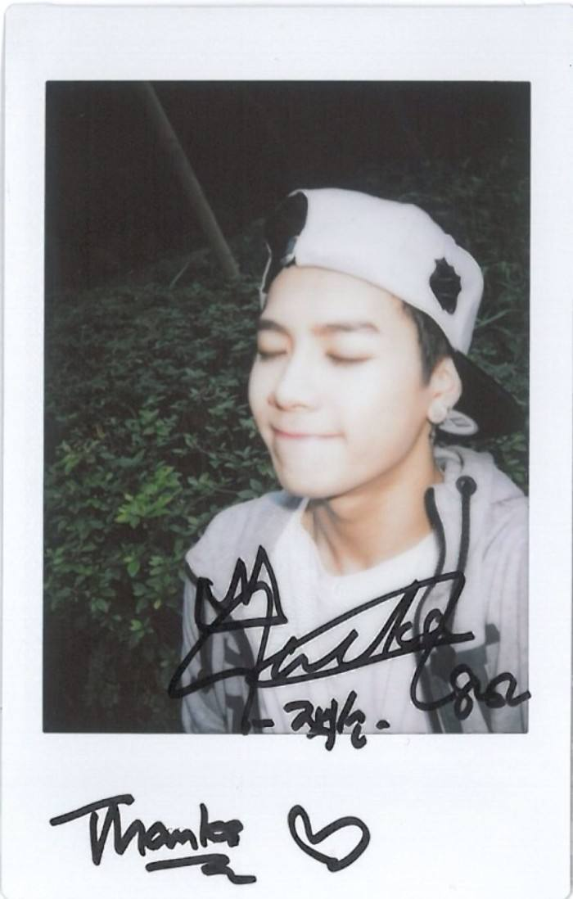

Jackson introdution
王嘉尔（잭슨，Jackson Wang），1994年3月28日出生于香港，中国香港流行乐男歌手、主持人，男子演唱团体GOT7成员。 2014年1月16日，以男子演唱团体GOT7成员的身份出道 [1] ；同年，获得SBS演艺大赏综艺部门男子新人奖 [2] 。2015年，与何炅搭档主持腾讯视频明星美食类脱口秀节目《拜托了冰箱》 [3-4] 。2016年，与何炅搭档主持湖南卫视明星美食艺能综艺节目《透鲜滴星期天》 [5] ；同年，获得腾讯视频星光大赏年度综艺之星奖 [6] 。2017年6月，宣布在中国成立个人工作室，专门负责大中华区活动；8月，参加爱奇艺综艺节目《中国有嘻哈》；同年，担任亚洲金曲大赏的嘉宾主持并获得MTV特别大赏 [7] ，此后相继推出个人电音嘻哈单曲《Generation 2》 [8] 、《Papillon》 [9] 、《OKAY》 [10] 、《DAWN OF US》 [11] 。 2018年1月27日，获得流行音乐年度盛典年度最受欢迎新人奖 [12] ；参加爱奇艺综艺节目《偶像练习生》；3月，参加爱奇艺综艺节目《热血街舞团》。

| 中文名 | 王嘉尔 | 经纪公司 | JYP Entertainment、王嘉尔工作室 | |
|---|---|---|---|---|
| 外文名 | Jackson Wang | 王+2、王饺子、嘎嘎 | >代表作品：Dawn of us、okay、papillon | |
| 国籍 | 中国 | 中国 | >特长：击剑、极限武术、B-Box | |
| 星座 | 白羊座 | 血型 | O型 | |
| 身高 | 175cm | 体重 | 63kg | |
| 出生地 | 香港 | 出生日期 | 1994年3月28 | |
| 职业 | 歌手、主持人 | 对内担当 | rapper、艺能担当 | |
| 联系方式 | 13674048276 | 邮箱 | 1079340855@qq.com | |
演艺经历
>2014年1月1日， JYP公司宣布7人男子组合GOT7出道的消息；1月5日，王嘉尔的资料以及预告照于JYP官网公开 [16] ；1月16日，王嘉尔随GOT7通过Mnet音乐节目《M! Countdown》完成出道舞台 [1] ；1月20日，随GOT7发行组合首张韩语迷你专辑《Got It》；4月4日，随GOT7在于日本举行两场showcase [17] ；6月23日，随GOT7发行组合第二张韩语迷你专辑《Got Love（GOT♡）》 [18] ；7月，参加MBC every1综艺节目《一周的偶像》3周年特辑节目《HIT制造机》的录制，与陆星材、N、hyuk组成限定团体大瓶（Bigbottle），并参与发行了首支单曲《Stress Come On》；9月，作为固定嘉宾参加SBS电视台综艺真人秀节目《Roommate第二季》的录制 [19] ；10月22日，随GOT7发行组合首支日语单曲《AROUND THE WORLD》，从而正式进军日本歌坛 [20] ；11月18日，随GOT7发行组合首张韩语正规专辑《Identify》 [21] ；12月，参加MBC every1综艺节目《HIT制造机第二季》，推出组合第二支单曲《鱿鱼大酱》；12月30日，获得SBS演艺大赏综艺部门男子新人奖 [2] 。

2015年1月27日，其出演的青春校园魔幻网络剧《Dream Knight》（《玩偶骑士》）首播 [22] ；5月17日，王嘉尔开始担任SBS音乐类节目《人气歌谣》的固定主持人 [23] ；6月10日，随GOT7发行组合第二支日语单曲《LOVE TRAIN》 [24] ；7月13日，随GOT7发行组合第三张韩语迷你专辑《Just right》；与此同时，王嘉尔还赴尼加拉瓜参加了SBS综艺节目《金炳万的丛林法则》的录制；9月29日，随GOT7发行组合第四张韩语迷你专辑《Mad》 [25] ，而专辑主打曲《If You Do》则在音乐打榜类节目《THE SHOW韩秀榜》中获得出道后的首个一位 [26] ；11月23日， 杂志拍摄 杂志拍摄(45张) 随GOT7发行改版专辑《MAD Winter Edition》；12月3日，王嘉尔与何炅搭档主持的明星美食类脱口秀节目《拜托了冰箱》于腾讯视频首播 [3-4] 。

2016年3月21日，随GOT7发行组合第五张韩语迷你专辑《FLIGHT LOG: DEPARTURE》 [27] ；4月，王嘉尔与何炅二度搭档，在湖南卫视打造的明星美食艺能综艺节目《透鲜滴星期天》中担任透鲜小分队队长 [5] ；5月18日，王嘉尔与何炅搭档主持的明星美食类脱口秀《拜托了冰箱第二季》在腾讯视频首播 [28] ；7月15日，其参与录制的户外真人秀节目《我们战斗吧》于江苏卫视首播 [29] ；9月27日，随GOT7发行组合第二张韩语正规专辑《FLIGHT LOG:TURBULENCE》，其中收录了王嘉尔参与作词作曲的《Boom x3》 [30] ；12月10日，获得腾讯视频星光大赏年度综艺之星奖 [6] 。